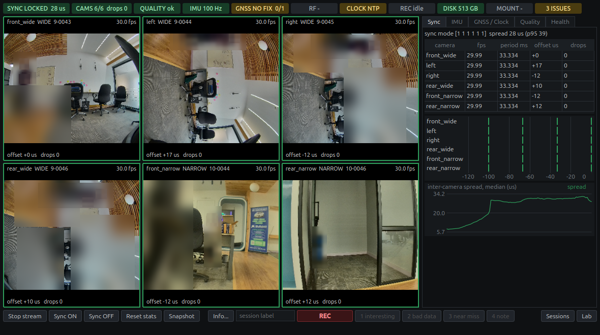
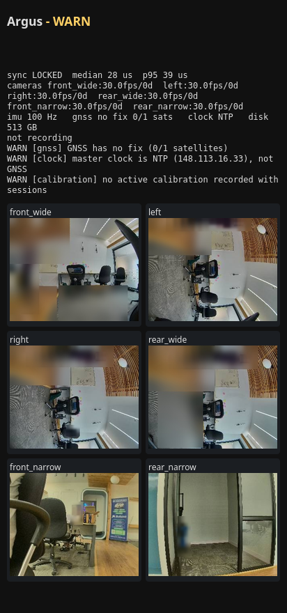
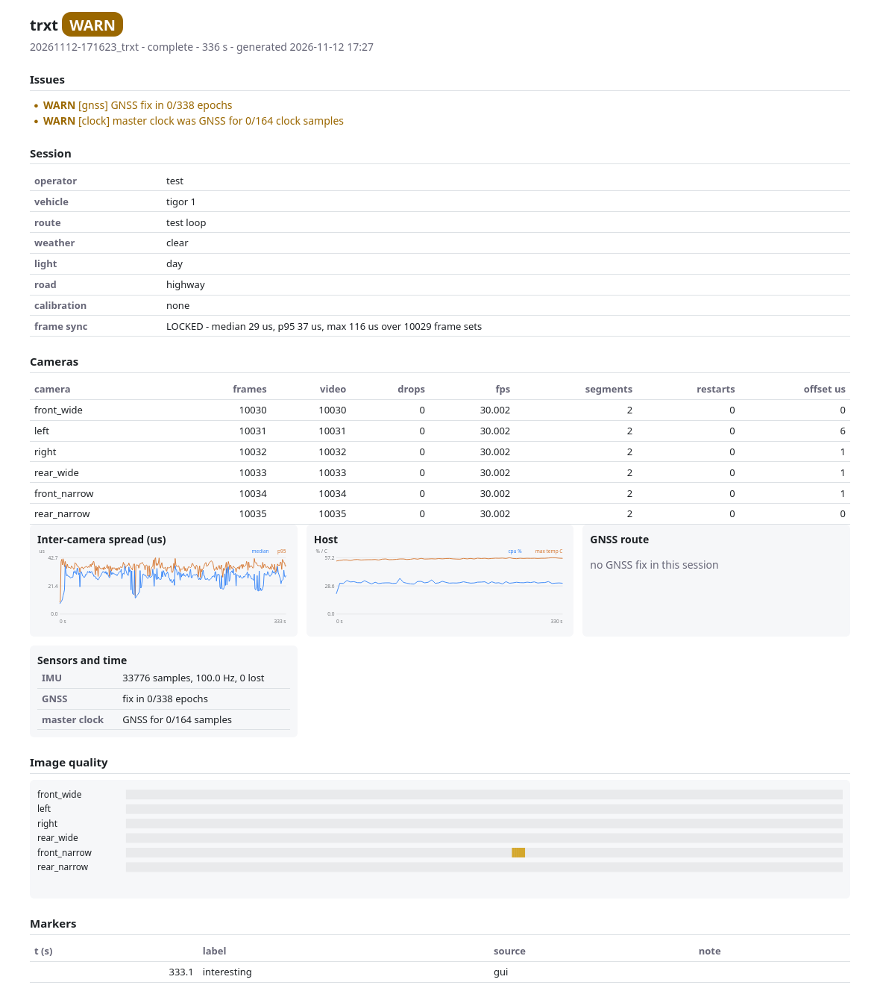
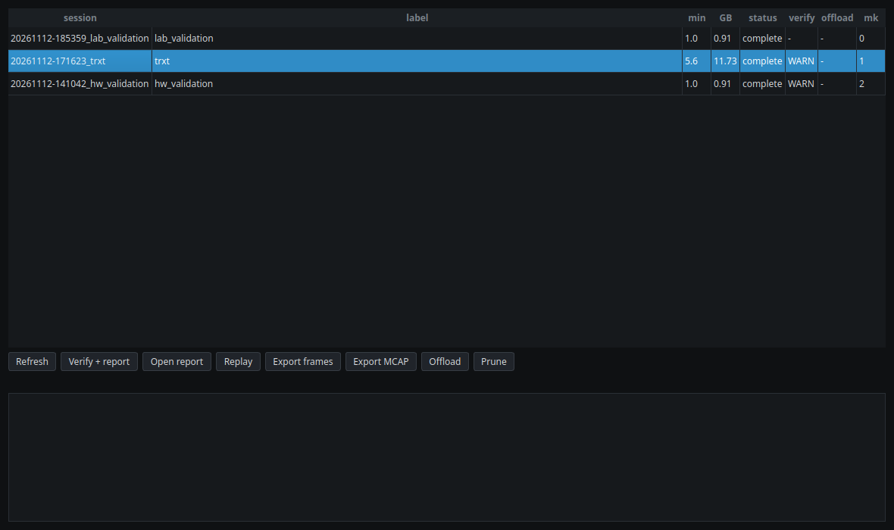
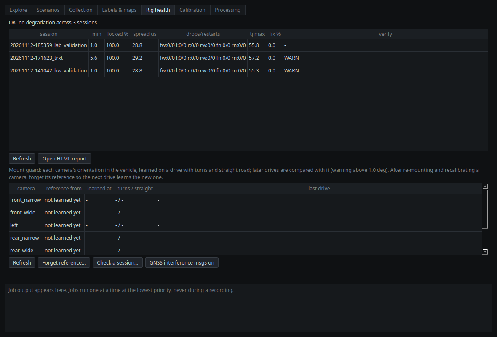

Recording, guarding, checking
Everything a data-collection crew uses on the road and at the depot: the operator window, live guards, markers, the phone page, verification and reports, offload, replay and export.
The operator window

The chip bar turns the health model into one glance. Each chip is green, amber or red; clicking ISSUES opens the list of health rules behind them.
| Chip | Shows |
|---|---|
| SYNC | Frame-sync verdict and live spread (LOCKED / DEGRADED / PARTIAL / FREE-RUN) |
| CAMS | Cameras running, frame rate, drops and restarts |
| QUALITY | Image-quality flags: black, dark, over-exposed, blocked lens, blur |
| IMU / GNSS | IMU rate and packet loss; GNSS fix, satellites, RTK state |
| CLOCK | Whether system time comes from GNSS or the network |
| REC / DISK | Recording state and duration; free space and time left |
| ISSUES | Count of WARN / FAIL rules, with the list |
| MOUNT / RF / FOX | Camera-mount guard, GNSS interference guard, Foxglove viewers |
Operator workflow
- Before the drive: open the GUI (or run
avrig check). Any FAIL — sync off, a camera missing, low disk, overheating — blocks recording. Recording past it needs an explicit force, and the session is marked as forced. - Metadata: Info… sets operator, vehicle, route, weather, light, road, tags and notes. Operator and vehicle are required. Pick lists come from
~/.config/avrig/presets.yaml; the values go tometa.jsonand the manifest. - While recording: markers on 1–9 / F1–F9 or the buttons. On the CLI: Enter for the first label, a digit for a label, or type text for a note. Markers go to
markers.csvat the exact capture-clock time. - After the drive: Sessions to verify, open the report, replay, export, offload and prune. These jobs run at low priority and are refused while recording.
Live guards
Camera-mount guard
A camera that has been knocked by a degree makes its calibration wrong, and nothing else in the data shows it. The mount guard measures, while driving, two directions that belong to the vehicle as seen by each camera:
- Up — the axis the camera rotates about when the vehicle turns, from the image motion between two frames 0.25 s apart, cross-checked against the IMU's gyro;
- Forward — the direction the camera sees itself moving on straight road.
Together they fix the camera's orientation in the vehicle. The first drive with enough evidence (40 turning pairs and 30 straight pairs) learns a reference per camera; later drives are compared with it. Each direction is a weighted robust mean (weights grow with the rotation angle, since small turns carry little information about the axis). A change is reported only when it exceeds mount_guard_deg (1°) by more than two standard errors, three evaluations in a row — then the MOUNT chip turns amber, a WARN is raised and an automatic camera_moved marker is written.
Cost control: frames come from a leaky 640×512 grey branch at 4 Hz; a pair is analysed only while turning, or every few seconds on straight road at a known GNSS speed; parked, frames are not even copied. Measured: +7–8 % of one core, 0 drops. The guard uses the active calibration's lens model, or a nominal one (wide: equidistant ~120°, narrow: pinhole ~60°) — the nominal model's bias is the same for the reference and the check, so the change is still measured correctly.
avrig mount status # learned references and the last result per camera
avrig mount reset --cams front_wide --yes # forget one after a deliberate re-mount
avrig mount check SESSION # run the guard over a recorded drive (~25 s per minute of six cameras)GNSS interference guard
Turn the receiver's reports on once with avrig gnss --rf-enable (RAM layer; --persist keeps them). Then, at 1 Hz and under 100 bytes/s: the jamming indicator (0–255), antenna status (open / short) and AGC from UBX-MON-RF, and the spoofing state from NAV-STATUS go to the RF chip, health WARNs and gnss_rf.csv.
On this receiver (NEO-F9P, firmware HPGL1L5 1.40) the interference detector configuration (CFG-ITFM) and SEC-SIG are not available, so the jamming state reads “unknown”. The indicator, antenna and spoofing state work — indoors on the bench the indicator read 94/255 with the antenna OK.
Automatic events
Detected live from IMU and GNSS samples (a cheap append on the sensor threads, analysis at 2 Hz) and written to markers.csv with source auto at the event's own time: hard brake / acceleration (GNSS speed change), sharp turn (yaw rate), bump or pothole (vertical shock), stop / start, GNSS lost / regained, RTK fixed / lost. No IMU mounting calibration is needed: “up” is the long-term mean of the accelerometer. avrig events SESSION --write re-scans old sessions with new thresholds.
Image quality
One 160×128 grey thumbnail per camera per second (well under 1 ms of numpy) flags black, dark, over-exposed, blocked (a large featureless area: a lens cover, a sticker, mud) and blurred images. Blur is judged against the camera's own recent sharpness, because absolute sharpness depends more on the scene than on the lens. A flag must persist for 3 samples, so a passing truck or a tunnel entrance does not raise it.
Calibration link
avrig calib register FILE --name N --activate stores an immutable, hashed copy of a calibration, and every session records the active id. Health warns when there is none, when it is older than calib_max_age_days, or when the last check found a moved camera. calib reference (in the calibration bay, right after calibrating) and calib check (same bay, later) compare ORB features to detect a camera that moved — a real-scene test read 0.0 px on all six unchanged views and 5.98 px for a simulated 6 px bump.
Phone page and remote status

avrig gui --remote (or remote_enable: true) serves a status page on the LAN: /, /api/status, /api/health and /thumb/<cam>.jpg. Thumbnails and status are at most one per second. With remote_token, requests need ?token= or the X-Avrig-Token header. With remote_markers: true and a token, the page shows big marker buttons for a co-driver (configured labels only). There are no other write endpoints: nothing remote can start, stop or reconfigure the rig.
Quality assurance
Verify
avrig verify SESSION checks what downstream consumers rely on: every segment demuxes; video frame counts equal frames.csv rows; timestamps strictly increase; drops; whole-session camera alignment; IMU continuity; GNSS fix and master-clock coverage; image quality; markers. Writes verify.json. On this rig a 61 s recording verified with frames.csv equal to the video frames on all six cameras, 0 drops, and alignment 29 µs median / 38 µs p95.
Report

avrig report SESSION writes one self-contained report.html: sync and offsets over time, host load, temperatures, the quality timeline, route and markers.
Sessions

Rig health trends

avrig trends summarises every session and flags wear: a camera restarting or dropping in 2 of the last 5 sessions, an offset or the inter-camera spread creeping up, time not LOCKED, temperatures rising, IMU packet loss. Lab → Rig health shows it with the guard states.
Offload, prune and the depot
avrig offload SESSION… --dest DIRcomputes SHA-256 while copying, re-hashes the copy on read-back, and writes a receipt on both sides. Resumable.avrig prune --older-than DAYSdeletes only sessions with a verified offload whose copy still exists and re-hashes correctly — including after same-size corruption. Dry run unless--yes.avrig depot(or the 15-minute timer) does both automatically when the destination is reachable and nothing records; anything that fails is left for the next run, never half-deleted.avrig retain SESSION --pre 20 --post 10keeps only the video around events (hard links, no extra space) with all sensor logs, verifies, and only then (--replace --yes) deletes the original.
Replay and export
- Replay (Sessions → Replay): up to six hardware decoders at preview size, driven by one clock; each view shows the last frame captured at or before the shared time. On a real session: seek ~0.5 s, all six views within ±30 µs of each other, 1× playback keeps up.
- MCAP (
avrig export mcap): indexed MCAP with chunk and message indexes and CRCs, ROS 2 CDR encoding —foxglove_msgs/CompressedVideo(H.265 copied verbatim, never re-encoded),sensor_msgs/Imu,sensor_msgs/NavSatFix, markers as logs, session metadata; with a trajectory and calibration also/tf,/tf_staticand camera calibration; with detections, box annotations over the video. A 5.6 min session exported in 27 s (5.03 GB for 5.02 GB of video) and seeks from its index in ~0.02 s. - Frames (
avrig export frames): timestamp-matched frame sets from all cameras at markers, every N seconds or at given times, with an index of capture times and offsets.
GNSS ground truth and CAN
- Raw GNSS log (
gnss_raw: true+avrig gnss --raw-enable): carrier phase and pseudoranges (RXM-RAWX) and navigation data (RXM-SFRBX) ingnss_raw.ubx, ~2–5 KB/s, for PPK with a base station in RTKLIB or similar. - Live RTK (
ntrip_url): RTCM 3 from an NTRIP caster, CRC-checked, written to the receiver through gpsd; GGA sent back for VRS mount points. Corrections improve position, not timing. - CAN (
can_ifaces): raw frames with kernel timestamps incan.csv, decoded offline with the vehicle's DBC; wheel speed feeds the trajectory filter.
Hands-free collection
avrig auto (or the avrig-auto service) records when GNSS speed stays above 2.5 m/s for 3 s, stops after 5 minutes parked, and starts a new session every hour. Preflight still gates every start and is retried. Cameras are off while parked. The phone page is the UI, and an optional GPIO LED shows waiting / recording / fault. SIGTERM (shutdown, UPS low) stops a recording cleanly. Several rigs can be watched on one page with avrig fleet --rigs car1=URL,car2=URL.
Collection mode
With the root helper installed and collection_mode: true, a recording saves the clocks and runs jetson_clocks, pauses the Docker containers and stops the services listed in /etc/avrig/collection-mode.conf, and restores exactly what it changed when the recording stops. Nothing is listed by default — during the measurements one monitoring container alone used ~125 % of one core.